![Figure 3: Effect of sampling rate on prediction performance. We train a small autoregressive transformer model on a didactic interpolation task, in which the network must predict the black dashed curve given the four circles. We find that models trained with the binning tokenization approach used in prior VLAs [10, 39] produce increasingly poor predictions as we increase the sampling frequency of the underlying signal, due to strong correlation between consecutive tokens at high frequencies. Our FAST tokenization approach, based on the discrete cosine transform (DCT), addresses the problem and leads to high-quality predictions across all sampling rates.](fig3.png)
HTML version made by Claude (claude-opus-5-5) from the PDF; check the PDF for exact wording and figures.
Karl Pertsch∗,1,2,3, Kyle Stachowicz∗,2,
Brian Ichter1, Danny Driess1, Suraj Nair1, Quan Vuong1, Oier Mees2, Chelsea Finn1,3, Sergey Levine1,2
1Physical Intelligence, 2UC Berkeley, 3Stanford
https://pi.website/research/fast
Abstract—Autoregressive sequence models, such as Transformer-based vision-language action (VLA) policies, can be tremendously effective for capturing complex and generalizable robotic behaviors. However, such models require us to choose a tokenization of our continuous action signals, which determines how the discrete symbols predicted by the model map to continuous robot actions. We find that current approaches for robot action tokenization, based on simple per-dimension, per-timestep binning schemes, typically perform poorly when learning dexterous skills from high-frequency robot data. To address this challenge, we propose a new compression-based tokenization scheme for robot actions, based on the discrete cosine transform. Our tokenization approach, Frequency-space Action Sequence Tokenization (FAST), enables us to train autoregressive VLAs for highly dexterous and high-frequency tasks where standard discretization methods fail completely. Based on FAST, we release FAST+, a universal robot action tokenizer, trained on 1M real robot action trajectories. It can be used as a black-box tokenizer for a wide range of robot action sequences, with diverse action spaces and control frequencies. Finally, we show that, when combined with the \(\pi_0\) VLA, our method can scale to training on 10k hours of robot data and match the performance of diffusion VLAs, while reducing training time by up to 5x.
Large, high-capacity Transformer models can be tremendously effective for capturing complex and generalizable robotic behaviors both from scratch [8, 69, 51, 6, 20, 62] and using models pre-trained for next-token prediction on Internet-scale image-text corpora [10, 39, 63, 7, 65]. However, these models require choosing a tokenization of the continuous action signal, which determines how the discrete symbols predicted by the model map to continuous robot actions [64, 34, 41, 12]. It is widely known that a good choice of tokenization can be critical to the performance of sequence models [55, 57]. Prior robotic policies of this sort typically use naïve tokenization strategies based on a per-dimension, per-timestep binning scheme [9, 10, 39]. We find that such methods perform poorly when learning dexterous skills with high-frequency control (see Figure 2, right). We observe that correlations between time steps are a major challenge for naïve tokenization strategies when predicting sequences of future actions, i.e., action “chunks”, as is common for high-frequency control. Highly correlated action tokens diminish the effectiveness of the next token prediction objective used in autoregressive VLAs. Intuitively, in such cases low token prediction loss can often be achieved with mappings as trivial as simply copying the most recent action token, leaving models in poor local optima.
∗: Core contributors
Correspondence to: research@physicalintelligence.company
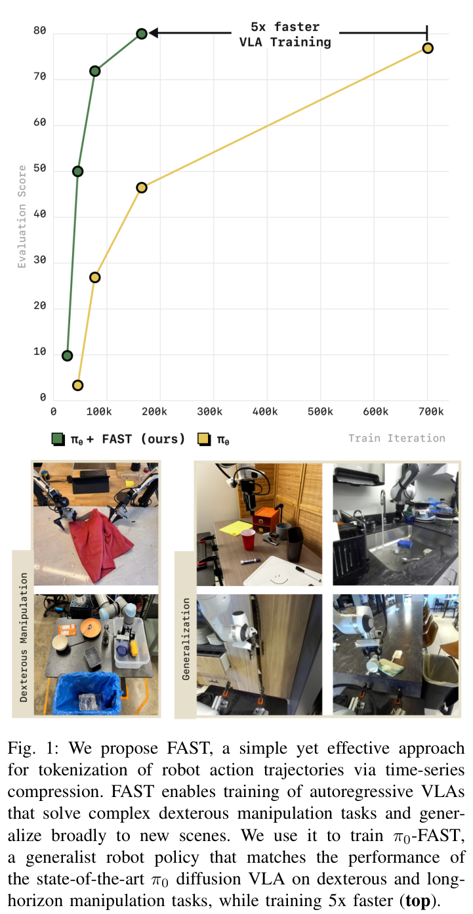
In this work, we propose a new tokenization strategy from first principles. Our key insight is that robot action signals need to be compressed before training, to reduce correlation between consecutive tokens. We take inspiration from compression-based tokenization strategies, such as the byte-pair encoding method commonly used by language models [27, 57]. However, since robotic actions are continuous, the corresponding compression strategy should be chosen accordingly. We therefore base our method off of the discrete cosine transform (DCT) encoding, which is widely used for compressing continuous signals such as images (e.g., JPEG compression). We find that the resulting tokenization approach, Frequency-space Action Sequence Tokenization (FAST), enables us to train autoregressive VLA policies via simple next token prediction (see Figure 2, left) for highly dexterous and high-frequency tasks where standard discretization methods fail entirely. Additionally, FAST for the first time enables efficient VLA training on the recently introduced DROID dataset [38], a large-scale multitask “in-the-wild” robot manipulation dataset. The resulting policy is the first language-conditioned generalist manipulation policy that can be successfully evaluated zero-shot in unseen environments, simply by prompting it in natural language.
Based on FAST, we develop FAST+, a universal robot action tokenizer, trained on 1M real robot action trajectories that cover a large diversity of robot embodiments, action spaces and control frequencies. We demonstrate that the FAST+ tokenizer effectively tokenizes a wide range of robot action sequences, from single-arm to bi-manual and mobile robots, and is a good off-the-shelf tokenizer for training autoregressive VLA models. When integrated with the \(\pi_0\) VLA, FAST-based autoregressive VLAs scale to training on 10k hours of robot data and achieve performance comparable to diffusion-based VLAs across a variety of tasks, while reducing training time by up to 5x (see Figure 1).
Tokenization for language, text, and audio. Tokenization is a key component of training pipelines for modern transformer-based autoregressive sequence models, and the choice of tokenization approach can have significant impact on model training and downstream performance [55]. While there are multiple works exploring the training of “tokenization-free” language models [28, 53] that directly operate on bit streams, most language models today rely on a text tokenization stage prior to training. A common approach is byte pair encoding [27, 55], which compresses input text by merging frequently occurring token sequences into new tokens. For images, learned compression schemes present an effective approach: input images can be represented as “soft tokens” produced by a pre-trained vision encoder [44], and full autoregressive image input-output can be achieved with a vector-quantizing autoencoder [22, 59]. Similar approaches can be extended to the video domain [66]. In audio generation and speech synthesis, which share the time-series structure of action prediction, state-of-the-art models typically encode time-series audio data using either frequency-domain spectrogram images [29] or using learned vector quantizers [68].
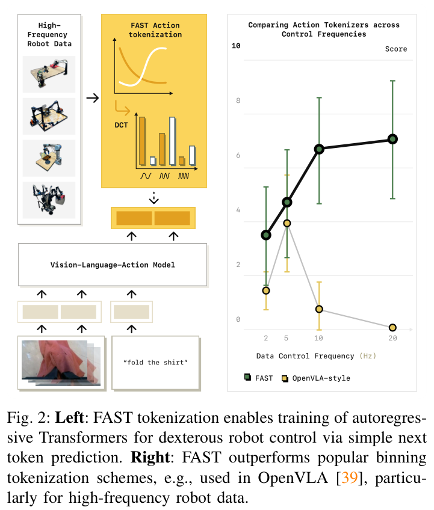
Vision-language-action models. Recently, multiple works have developed generalist robot policies [9, 51, 6, 10, 20, 39, 62, 11] that are trained on increasingly large robot learning datasets [52, 38, 60, 24, 47, 35]. One promising approach for training generalist policies are vision-language-action models (VLAs; [10, 17, 39, 67, 7, 63, 73, 71, 13, 11]). VLAs fine-tune vision-language models, that are pre-trained on internet-scale image and text data, for robot control. This has multiple benefits: using large vision-language model backbones, with billions of parameters, provides policies with the necessary expressivity for fitting large robot datasets. Reusing weights pre-trained on internet-scale datasets also improves the ability of VLAs to follow diverse language commands and generalize, e.g., to new objects and scene backgrounds [10, 39, 67, 63, 36]. Most VLA models today are confined to rather simple, low-frequency control tasks, particularly models that use the most common autoregressive VLA design [10, 39]. We show that this is a direct consequence of the action tokenization schemes employed by these models, which make training on dexterous tasks challenging. We introduce a new action tokenization approach that allows us to train the first autoregressive VLAs on dexterous and high-frequency robot data.
Action representations for VLA training. Prior works have explored various action parameterizations for training robot policies, including VLAs. One line of work uses “semantic” action representations like language sub-tasks [21, 2, 4], or keypoints [50, 32, 25, 19]. Such approaches can often learn from few examples or even perform tasks zero-shot without any robot examples [50, 32, 25], but require hand-designed low-level controllers for task execution, limiting their generality. An alternative approach directly trains VLAs to output low-level robot control commands given image and language instruction inputs. The most common design directly embeds actions into discrete tokens, that can be generated with standard autoregressive sequence models, like any popular vision-language model. Existing approaches map from continuous robot actions to discrete action tokens using a simple per-dimension, per-timestep binning scheme [9, 10, 39]. We find that this scheme struggles to scale to high-frequency robot control tasks. We propose a new tokenization scheme for robot actions, based on time-series compression techniques, that allows us to train autoregressive VLAs on high-frequency data. A number of works have also proposed alternatives to tokenization, for example by using regression heads or introducing new weights for diffusion decoding [20, 7, 41, 63]. In comparison, our approach does not require modifications of the underlying pre-trained transformer model, can easily be applied to any pre-trained autoregressive transformer model, and achieves competitive performance to state-of-the-art diffusion-based VLAs [7] across many tasks, while being significantly more compute efficient to train.
Another set of related work explores vector-quantized action representations [41, 3, 49]. Such approaches train a vector-quantized encoder-decoder network, for which reconstruction quality can be sensitive to hyperparameter choices and structure [66]. We find that these methods perform well at coarse, low-fidelity reconstruction tasks, but fail on high-frequency tasks when fine-grained control is required. In comparison, our FAST tokenization scheme has few hyperparameters and can reconstruct actions with high precision while offering strong compression properties.
Problem formulation. Our goal is to train policies \(\pi(a_{1:H}|o)\) that map an observation \(o\) to a sequence of future robot actions \(a_{1:H}\). We assume that policies output an “action chunk” [69, 40], a sequence of \(H\) actions [15, 7, 69], which makes it easier to produce temporally-consistent actions and reduces compounding error. The goal of action tokenization is to define a mapping \(\mathcal{T}_a : a_{1:H} \to [T_1, \ldots, T_n]\) from a sequence of continuous actions \(a_{1:H}\), with dimensionality \(|\mathcal{A}|\), to a sequence of \(n\) discrete tokens \(T \in |\mathcal{V}|\) from a vocabulary of size \(|\mathcal{V}|\). Note that the number of tokens \(n\) may differ between action sequences, just like sentences of the same length may be tokenized into a variable number of text tokens.
Binning-based action tokenization. The most commonly used approach for action tokenization is a simple binning discretization scheme [8, 10, 39, 72, 56]. For a given action \(a\), this approach discretizes each dimension independently, dividing the range of values in the training dataset into \(N\) uniform bins, most commonly using \(N = 256\). For a sequence of \(D\)-dimensional actions \(a_{1:H}\), this tokenization scheme would be applied to each time step, resulting in a final token sequence \(\mathcal{T}_a(a_{1:H}) = [T_{1,1}, \ldots, T_{1,D}, \ldots, T_{H,1}, \ldots, T_{H,D}]\). For high-frequency robot data, this tokenization scheme is sub-optimal: it can easily produce hundreds of tokens per action chunk, which make training challenging and lead to slow inference.
To illustrate the challenge of training autoregressive policies with current action tokenization approaches, we start with a simple didactic example. We create a synthetic time-series dataset where the goal is to predict a cubic spline that interpolates four randomly-generated points (see Figure 3, bottom). This toy problem reflects the challenge faced by policies trained on high-frequency action chunks, which must predict a sequence of continuous actions given some conditioning information. We tokenize the target sequences using the naïve tokenization scheme employed in previous VLA policies, which discretizes each element in the sequence separately into one of 256 bins (see Section III). We then train a small, autoregressive transformer policy to predict the tokenized signal given the conditioning points. We repeat this experiment for different sampling rates of the target signal, from 25 to 800 timesteps per sequence, without changing the underlying dataset. This emulates training autoregressive policies on action data collected at different frequencies.
The average prediction MSE of autoregressive models trained at different frequencies is shown in Figure 3, top (“naive”). We observe that the model with binning tokenization achieves good prediction performance (i.e., low MSE) for low sampling rates. But as the sampling rate increases, the prediction error steeply increases, until eventually the model simply copies the first action, as seen in the qualitative visualization in Figure 3, bottom left. Note that this issue cannot be attributed to the data itself: the complexity of the underlying data distribution does not change, and we would expect a model with the same capacity trained for the same number of steps to achieve comparable performance across all sampling rates. So what happened?
To understand how the tokenization scheme impacts learning performance, we need to look at the learning objective itself. Fundamentally, autoregressive models are trained to predict the next token, given all previous tokens. As such, their learning signal is proportional to the marginal information content of \(T_i\) given \(T_{1:i-1}\). Crucially, when using the naïve per-timestep tokenization scheme, this marginal information approaches zero as the control frequency of the training signal increases: for smooth signals, as timesteps get shorter the change per timestep decreases proportionally. This greatly slows down the rate of convergence during training and can make it challenging to fit complex, high-frequency datasets. Indeed, such challenges have been observed in prior work. For instance, OpenVLA worked well on the low-frequency BridgeV2 and RT-1 datasets, but has struggled to fit the higher-frequency DROID dataset [39]. The result of our case study underlines the importance of designing better tokenization schemes for robot actions.
We saw in the previous section how redundancy in high-frequency action trajectories can lead to low marginal information for each action token, and thereby poor training performance. To address this, we need a tokenization approach that compresses the highly redundant action signal into a smaller number of high-information tokens. In this section, we will first describe a simple approach for compressing continuous time series (V-A), then use it to design an action tokenization algorithm (Section V-B), and finally explain how we train a universal tokenizer for robot actions (Section V-C).
There is a rich body of work on effectively compressing continuous time series, from approaches that compress signals after transforming them into the frequency domain [18, 1, 61] to learned compression approaches, e.g., based on vector quantization [59, 48]. One key takeaway of our work is that any sufficiently effective compression approach, when applied to the action targets, is suited to improve the training speed of VLA models. In practice, there are a few considerations that may still lead us to favor some compression algorithms over others, e.g., the complexity of training the tokenizer, and how efficient is it at tokenizing and detokenizing actions.
In this work, we use a compression algorithm based on the discrete cosine transform (DCT) [1]. DCT is a frequency-space transform that represents a continuous signal as a sum of cosine elements of various frequencies. Low frequencies capture the overall shape of the signal, while high-frequency components reflect sharp jumps. DCT is a commonly used transformation for compression algorithms, e.g., for JPEG image compression [61], due to its simplicity and computational efficiency, and its strong compression property on practical images: since pixels often vary smoothly, DCT can often represent most of the information of an input signal in only a few coefficients. Signals can be compressed by omitting frequency components with low weights. Compared to learned compression approaches based on vector quantization, DCT-based compression is an analytical approach, thus extremely simple and fast.
We use the discrete cosine transform to design FAST, a quick and effective tokenization approach for robot actions. We detail the steps from raw robot actions to action tokens in Figure 4. We first normalize the input actions, such that the 1st and 99th quantile of values in the training dataset for each action dimension maps to the range \([-1, \ldots, 1]\). This initial normalization step is useful to bring the data into a specified range and also makes tokenization of cross-embodied datasets with different action scales easier. We use quantiles to be robust to outlier actions which occasionally occur in large robot datasets. After the data is normalized, we apply the discrete cosine transform to each action dimension separately. To compress the DCT-converted signal we can simply omit insignificant coefficients, which we implement through a scale-and-round operation, where the scaling coefficient is a hyperparameter that trades off between lossiness and compression rate of the tokenization operation.
After the rounding operation, the DCT coefficient matrix is typically sparse, with most entries being zero and only a few significant coefficients remaining per action dimension. To actually realize the compression, we must convert this sparse matrix into a sequence of dense tokens. We flatten the matrix into a 1-dimensional vector of integers, interleaving action dimensions by including all low-frequency components first, and train a byte pair encoding (BPE) tokenizer [27] to losslessly compress it into dense action tokens. The BPE step “squashes” the zero-valued components and merges frequently-occurring coefficient combinations across action dimensions. We choose BPE to compress the DCT matrix, since many efficient implementations exist and it can produce a fixed-size output vocabulary that can be easily integrated into the existing vocabulary of vision-language models for VLA training. Other lossless compression algorithms like Huffman coding [33] or Lempel-Ziv methods [75] (the algorithms underlying the gzip compression approach) could be used instead, but we leave this investigation for future work.
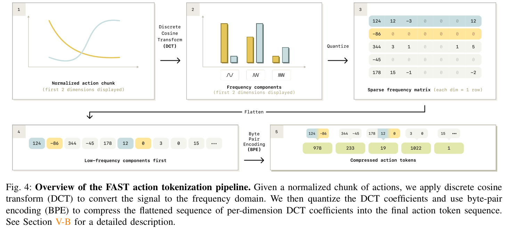
Note that the order of flattening the \(|\mathcal{A}|\times H\) DCT coefficient matrix prior to BPE encoding can have significant impact on policy training. There are two options: column-first flattening, i.e., concatenate the lowest-frequency components for each dimension first, or row-first flattening, i.e., concatenating all frequency components for a single action dimension first. We choose the former, since we find that predicting the low-frequency components, that characterize the overall shape of the output sequence, first during autoregressive prediction leads to more stable policy rollouts.
All operations in our tokenization pipeline are easily invertible, allowing fast decoding of predicted actions. The tokenizer has only two hyperparameters: the scale applied to the DCT coefficients before rounding, and the vocabulary size of the BPE compression step. We find that both parameters are not very sensitive, and we use the same values across all our single-dataset tokenization experiments (rounding scale 10, BPE vocabulary size 1024). This is in contrast to end-to-end learned compression modules that rely on vector quantization [59]. Such networks are often tedious to train, and require careful dataset-specific hyperparameter selection to achieve good reconstruction [66, 48]. Our experiments show that our DCT-based tokenization approach trains higher-performing policies than VQ-based approaches, while being significantly simpler and easier to tune.
Algorithm 1 FAST Tokenizer
Require: scale γ, (for inference) BPE dictionary Φ
procedure FASTTOKENIZER(a_{1:H})
C^i_j ← DCT(a^i_{1:H}) ▷ Compute DCT coefficients
C̄^i_j ← round(γ · C^i_j) ▷ Quantize coefficients
[T_k] ← [C̄^1_1, C̄^2_1, ..., C^1_2, ..., C^n_H] ▷ Flatten tokens
BPE Training:
φ ← TrainBPE(D := {[T_k]})
Tokenization:
[T̄_1, ..., T̄_k̄] ← BPE([T_1, ..., T_k], φ)
return action_tokens
We empirically demonstrate the benefits of our DCT-based tokenization in the toy example from Section IV. Figure 3 shows that training the autoregressive model on DCT-compressed target tokens achieves constantly low prediction error across a wide range of sampling frequencies. We provide a concise summary of our tokenization approach in Algorithm 1 and test the effectiveness of FAST tokenization on robot control problems in Section VI.
The only learned component of our tokenizer is the vocabulary of the BPE encoder, which needs to be trained for each new dataset that the tokenizer is being applied to. While this learning process is fast (typically only a few minutes), it adds additional friction to using FAST tokenization. Thus, we aim to train a universal action tokenizer, that can encode chunks of robot actions from any robot. To this end, we train a tokenizer using the pipeline described above on a large, cross-embodied robot action dataset, consisting of approximately one million 1-second action chunks from single-arm, bi-manual and mobile manipulation robots, with joint and end-effector control action spaces and various control frequencies. We provide a detailed breakdown of the data mixture used for training the universal tokenizer in Appendix A. Once trained, our universal action tokenizer, FAST+, can be applied as a black-box tokenizer on 1-second action sequences from any robot setup. Our experimental evaluation shows that it is competitive to tokenizers tuned for individual datasets.
Code release. We release our pre-trained universal action tokenizer, FAST+, in a convenient HuggingFace AutoProcessor class, that makes it easy to apply the tokenizer to any new robot action chunk in three lines of code:
from transformers import AutoProcessor
tokenizer = AutoProcessor.from_pretrained(
"physical-intelligence/fast",
trust_remote_code=True
)
tokens = tokenizer(action_chunk)
For best compression results, we recommend normalizing input actions to range \([-1, \ldots, 1]\) via quantile normalization as described in Section V-B, and tokenizing 1-second action chunks at a time. Our module also makes it easy to train a new FAST tokenizer on a given dataset of action chunks:
from transformers import AutoProcessor
tokenizer = AutoProcessor.from_pretrained(
"physical-intelligence/fast",
trust_remote_code=True
)
new_tokenizer = tokenizer.fit(action_dataset)
In our experiments, we test FAST with two VLA backbones: \(\pi_0\) [7] and OpenVLA [39]. We compare FAST to alternative action tokenization schemes and ablate key design decisions. We then compare \(\pi_0\) models trained with FAST tokenization to the state-of-the-art \(\pi_0\) flow-matching (diffusion) VLA, and test the scaling of autoregressive VLA training with FAST to large, cross-embodied datasets with 10k hours of dexterous robot manipulation data.
Policy implementation. We test different tokenization schemes for autoregressive VLA training with popular VLA backbones. For most of our experiments, we use \(\pi_0\) [7], a VLA based on PaliGemma-3B [5]. We also test with OpenVLA [39], which is built on Prismatic 7B [37]. During training, we tokenize 1-second action chunks and overwrite the least used tokens in the VLM vocabulary with the resulting action tokens, following prior VLAs [10, 39]. We fine-tune the VLA models for robot action prediction, without weight freezing. We provide more details on the policy training setup in Appendix C.
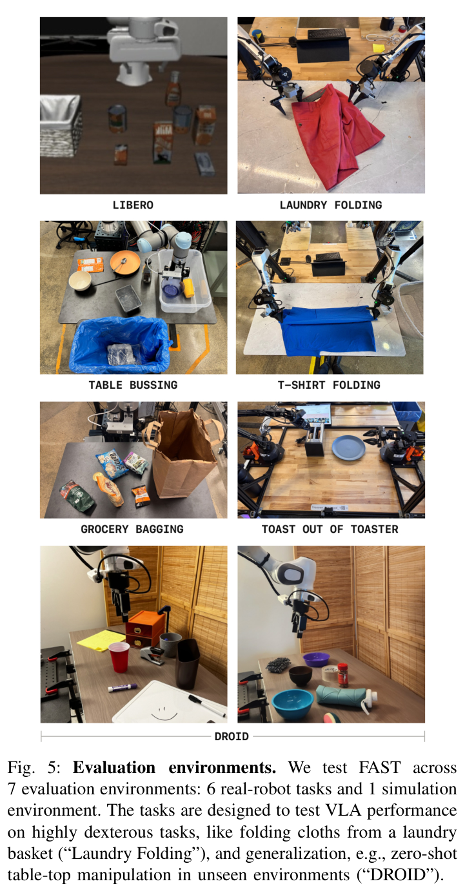
Evaluation tasks. We develop a suite of 7 evaluation tasks (6 real robot, 1 simulated; see Figure 5), designed to test VLA performance on both, highly dexterous tasks like laundry folding, and generalization tasks, like performing table-top manipulations 0-shot in unseen environments.
Following Black et al. [7], we use grocery bagging, the toaster task, and laundry folding only to evaluate our most powerful, generalist VLA in Section VI-F. We provide additional details on training datasets and evaluation tasks in Appendix E.
Comparisons. We test FAST, our DCT-based action tokenization approach, trained on each evaluation dataset individually, and FAST+, our universal DCT-based action tokenizer, trained on a large dataset of 1M action sequences. Note that we trained the universal tokenizer on the most diverse real robot dataset we could assemble, which includes data from our real-robot evaluation tasks. We compare both tokenizers to the per-dimension binning scheme used by prior autoregressive VLAs like RT-2 [10], RT-2-X [52] and OpenVLA [39], dubbed naïve tokenization. We apply the binning tokenization to each time step in the action chunk separately and then concatenate. Finally, while our approach provides a compressed tokenization without the need to train any separate model, we can consider an alternative compression scheme that instead trains a model to produce a quantized representation of the action chunk via FSQ [48], a simpler alternative to VQ-VAE [59]. This tokenization strategy has been previously used to tokenize high-dimensional image data [48, 66], and can be viewed as an ablation of our compression-based approach, utilizing compressed representations but with a more complex learning-based alternative to our relatively simple DCT-based method.
| Dataset | Action Dimension | Control Frequency | Avg. Token | Compression | |
|---|---|---|---|---|---|
| Naive | FAST | ||||
| BridgeV2 | 7 | 5 Hz | 35 | 20 | 1.75 |
| DROID | 7 | 15 Hz | 105 | 29 | 3.6 |
| Bussing | 7 | 20 Hz | 140 | 28 | 5.0 |
| Shirt Fold | 14 | 50 Hz | 700 | 53 | 13.2 |
We first provide a comparison of compression rates between our proposed FAST tokenizer and the naïve binning scheme used in prior works in Table I. We use 1-second action chunks from datasets with various action dimensionalities and control frequencies. For both approaches we use the default hyperparameters, which have comparable tokenization errors. We see that FAST achieves a significant compression of the input action sequences across all datasets. The compression benefits are especially pronounced for datasets with high-frequency action data. Interestingly, FAST consistently generates roughly 30 action tokens per chunk per robot arm (i.e., 60 tokens for the bi-manual setup) in each of the domains. This suggests that FAST finds a representation that approximates the complexity of the underlying action signal, and is largely independent of the frequency of the action data.
We note that this compression is not entirely lossless, with a trade-off between compression ratio and reconstruction accuracy determined by the scale parameter \(\gamma\) from Algorithm 1. Figures in Table I are at comparable reconstruction accuracy. Please see Appendix B for plots showing the trade-off between compression and fidelity for each of the tokenizers we compare.
Next, we train policies using the policy architecture and tokenization approaches described in Section VI-A. We report results in Figure 6.
Overall, we find that the naïve tokenization applied in prior works struggles to learn effective policies on high-frequency robot data. This is particularly apparent for the highest frequency tasks in our evaluations: Table Bussing (20Hz) and T-Shirt Folding (50Hz). On both tasks, policies trained with naïve tokenization are unable to make progress on the task.
In contrast, we find that compression-based tokenization leads to effective training. Comparing FAST to our FSQ baseline, we find that FAST is as good or at times better, particularly on the dexterous, high-frequency tasks, despite being much simpler and requiring no separate neural network training.

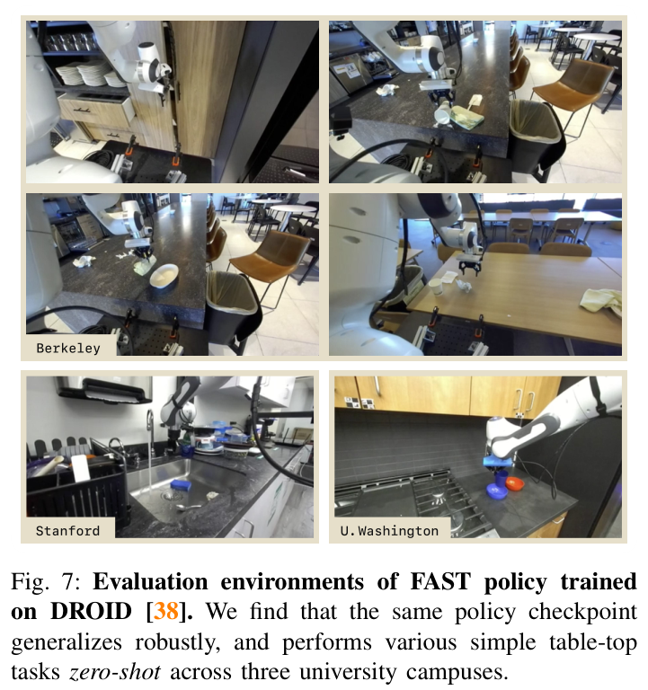
Notably, FAST tokenization enables the first successful training of a strong generalist policy on the DROID dataset [38], which can be evaluated zero-shot in unseen environments, without fine-tuning, by simply prompting it in natural language. All prior works, including the original DROID paper [38] and OpenVLA [39], did not show zero-shot results and focused entirely on co-training or fine-tuning evaluations instead. We demonstrate the generality of our DROID policy by testing it on various table-top manipulation tasks in environments across three university campuses (Figure 7). Out of the box, the policy can competently perform simple manipulation tasks, like picking and placing objects, opening and closing cupboards and turning on faucets, across a wide range of scenes and camera viewpoints. Even unsuccessful trials show sensible behavior, like approaching the handles of microwave and dish washer doors, even if ultimately failing to open them. We show success and failure videos on our website. While far from perfect, the level of generality and robustness of this policy substantially exceeds that of prior DROID policies.
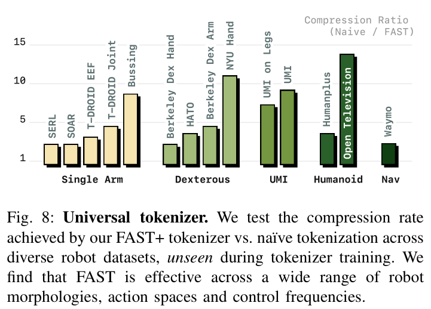
In this section, we evaluate the performance of our universal action tokenizer, FAST+, which we trained on 1M real robot action sequences (see Section V-C). To test the generality of the tokenizer, we assemble a diverse set of small testing datasets. This set spans a wide range of robot morphologies, action spaces, and control frequencies (see Figure 8, with a full list of datasets in Table III). Note that none of these datasets is part of the tokenizer training set. They thus test a scenario in which the tokenizer is applied to a completely new robot setup without recomputing the tokenization. We find that the FAST+ tokenizer achieves good compression performance across a wide range of robot datasets, reducing the number of action tokens by 2x across all datasets, and significantly more on some.
We also test performance of the universal tokenizer for policy training, and report results alongside the per-dataset tokenizers in Figure 6. Across all tasks, the universal tokenizer closely matches the performance of the dataset-specific FAST tokenizers, suggesting that the universal tokenizer can be used as a strong default for robot action tokenization.
We analyze two key aspects of our method: (1) Is our FAST tokenization approach independent of the underlying VLA backbone? (2) How important is the BPE compression step, the only learned component of our tokenization pipeline.
To answer the first question, we train an OpenVLA policy [39] on the challenging high-frequency T-shirt folding dataset, comparing the naïve tokenization approach originally used in OpenVLA to our FAST+ tokenizer. To comply with the task setup, we modify the OpenVLA model code to accept multiple input images and predict 1-second action chunks. The results on the right demonstrate that FAST is able to significantly boost performance of OpenVLA, enabling it to train effectively on high-frequency robot manipulation data. This suggests, that our tokenization approach is independent of the underlying model backbone, and may be easily applied to a wide range of pre-trained autoregressive transformer models.
Secondly, we ablate the BPE encoding step on the table bussing and T-shirt folding tasks. The figure on the right shows that the resulting policies without BPE encoding achieve worse rollout performance (but still outperform naïve tokenization). Intuitively, the DCT transform still concentrates most of the signal’s information in a few tokens, improving the learning signal. However, without BPE, there is a large number of repeated 0-tokens which dilute the learning signal and also significantly slow down inference, since models need to autoregressively predict hundreds of action tokens, ultimately leading to worse policy performance.
In this section, we compare \(\pi_0\), a state-of-the-art diffusion VLA, to our model that combines \(\pi_0\) with FAST and uses autoregressive decoding. We compare the performance of both models on the tasks from Section VI-B.
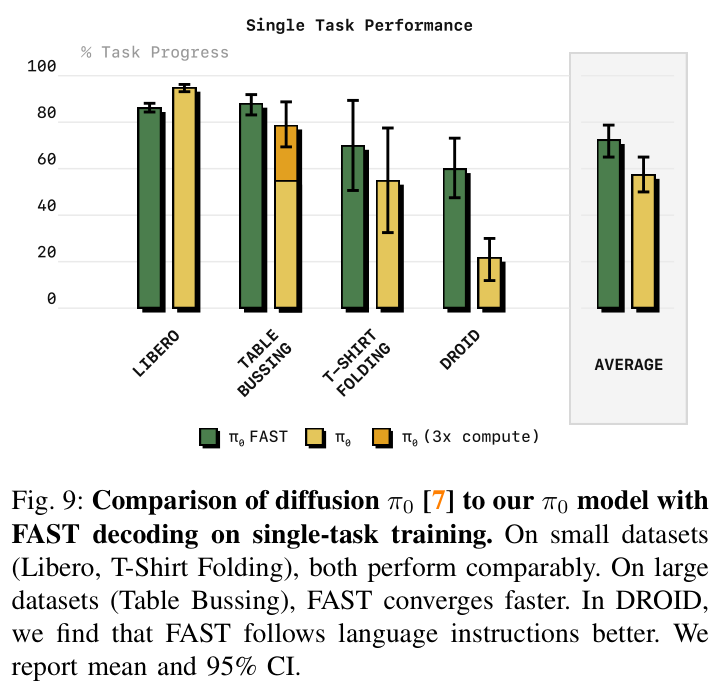
We report results in Figure 9. We find that on small datasets (Libero, T-Shirt Folding; <50h), both VLAs perform comparably. However, on large datasets like Table Bussing, we find that the FAST-based VLA converges significantly faster, reaching high performance with 3x fewer training steps than the diffusion variant of \(\pi_0\). Additionally, we find that the autoregressive \(\pi_0\) model trained with FAST tokenization follows language instructions more closely: in the DROID evaluations, the diffusion \(\pi_0\) model often ignores the language instructions, leading to a lower score. We will leave a detailed investigation of the language following abilities of diffusion and autoregressive VLAs to future work.
One current limitation of the autoregressive VLA is its inference speed: while \(\pi_0\) with diffusion typically predicts one second action chunks within 100ms on an NVIDIA 4090 GPU, the \(\pi_0\) model with FAST tokenization needs approximately 750ms of inference time per chunk, since it must perform more autoregressive decoding steps (typically 30-60 action tokens need to be decoded, vs. 10 diffusion steps for diffusion \(\pi_0\)) and use the full 2B parameter language model backbone for autoregressive decoding (vs. a 300M parameter “action expert” for diffusion \(\pi_0\)). While we did not find this slower inference to hurt performance on the static manipulation tasks we evaluated, it made evaluations significantly slower. Going forward, there are many techniques for accelerating the inference of discrete, autoregressive transformer models that are used extensively in the LLM literature (e.g., speculative decoding, quantization, custom inference kernels, etc.), but we will leave an investigation of these to future work.
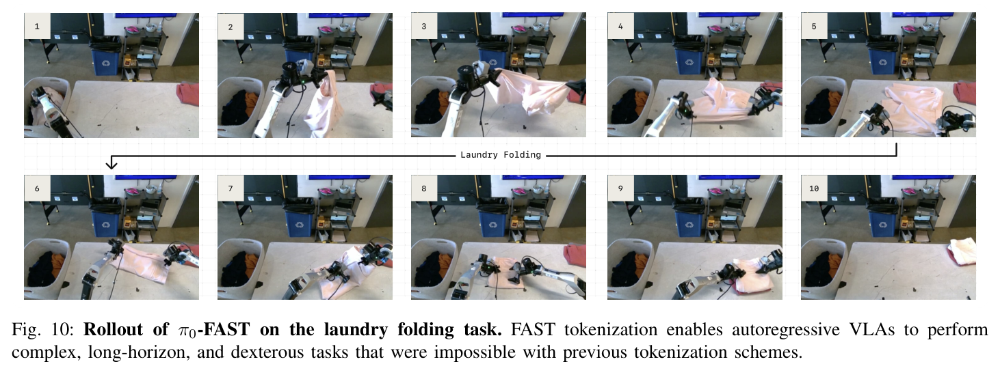
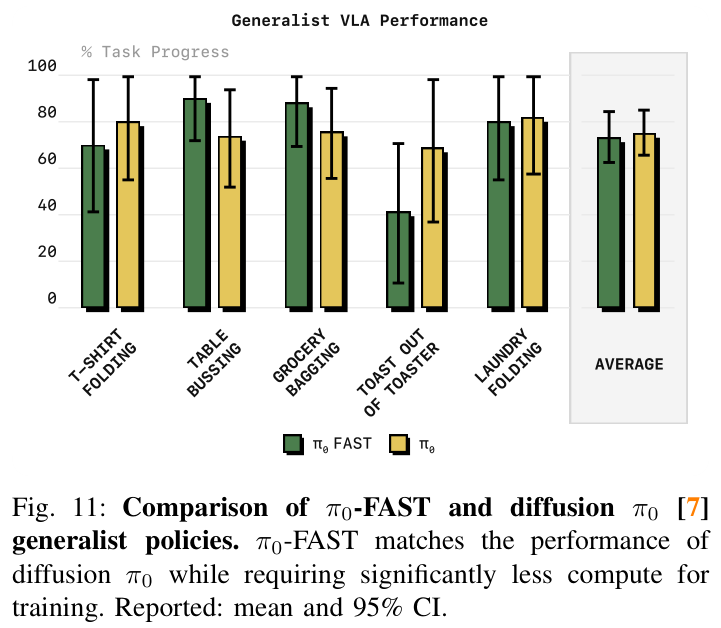
We have demonstrated FAST’s effectiveness for training autoregressive VLAs on individual robot datasets, but does it scale to training dexterous generalist policies? To test this, we train the \(\pi_0\)-FAST model from the previous section on the cross-embodied robot data mixture used by \(\pi_0\) [7], the largest dexterous robot manipulation dataset to date. It includes 903M timesteps from our own datasets. Additionally, 9.1% of the training mixture consists of the open-source datasets BRIDGE v2 [60], DROID [38], and OXE [52].
We compare zero-shot performance to the diffusion \(\pi_0\) model on the tasks from Black et al. [7] in Figure 11. Overall, we find that the autoregressive \(\pi_0\)-FAST model matches the performance of the diffusion \(\pi_0\) model, including on the most challenging laundry folding task, while requiring significantly less compute for training. We show a qualitative example of \(\pi_0\)-FAST performing the laundry folding task in Figure 10 and include additional videos on our website.
Importantly, we find that \(\pi_0\)-FAST converges significantly faster than the diffusion \(\pi_0\) model: the model in the evaluations above required 5x fewer GPU hours for training than the \(\pi_0\) model from Black et al. [7]. We show robot evaluation results for multiple checkpoints throughout the course of training in Figure 1 (averaging performance on two representative tasks: table bussing and t-shirt folding). The results show clearly that \(\pi_0\)-FAST achieves high performance significantly faster. For state-of-the-art VLA training runs, which can often use thousands of GPU hours, a 5x reduction in required compute is significant. We include a full comparison across all tasks for a compute-matched \(\pi_0\) checkpoint in Appendix, Figure 15 and find that the same conclusions hold: \(\pi_0\)-FAST clearly outperforms compute matched \(\pi_0\) due to its faster convergence.
To summarize, we have demonstrated that FAST tokenization allows us to train autoregressive VLAs on complex, dexterous robot tasks that prior tokenization schemes completely fail on. We have also shown that FAST, when combined with state-of-the-art VLAs like \(\pi_0\), scales to training generalist, cross-embodied policies that rival the performance of the best diffusion VLAs while being significantly faster to train.
In this paper, we introduced FAST, an efficient action tokenizer for high-frequency robotic control data. FAST uses the discrete cosine transform (DCT) followed by byte-pair encoding (BPE) to compress action chunks, leading to significantly better compression than existing action tokenizers across a range of robotics domains. Our real-world and simulated VLA experiments show that FAST leads to dramatically improved performance over the previously used naïve action discretization approaches, and outperforms more complex learned tokenization methods based on vector quantization. We also showed that we can train FAST+, a universal action tokenizer, that can serve as a strong default tokenizer for any robot action sequence. Using it, we trained \(\pi_0\)-FAST, a dexterous generalist policy that can match performance of state-of-the-art diffusion VLAs, while being significantly more efficient to train.
There are many exciting directions for future work:
Action tokenizers. While we believe that FAST is a significant step toward general purpose robot action tokenizers, many questions remain. In this work, we tested FAST on static robot manipulators. Our offline experiments demonstrated promising compression capabilities of FAST+ on other robot morphologies like mobile robots, dexterous hands, and humanoids. Testing actual policy performance on these platforms is an exciting direction for future work. Additionally, exploring alternative compression schemes, and testing the combination of compression-based action encodings with non-autoregressive decoding approaches like diffusion [7] are interesting directions for future investigation.
VLA architectures. Our paper has taken initial steps to explore the trade-offs between two major classes of VLA architectures, autoregressive and diffusion decoding VLAs, but the jury on the best VLA architecture is still out. Future work should carefully explore trade-offs in training speed, language grounding abilities, and expressiveness of either approach.
Inference speed. While \(\pi_0\)-FAST matches the overall performance of diffusion \(\pi_0\), it is slower at inference time (see Section VI-E). While the slower inference speed was acceptable on the static tasks we evaluated, future work should explore approaches for speeding up inference of autoregressive VLA models to enable them to solve highly dynamic tasks. There is a large literature of inference optimizations for large language models that can be readily applied to autoregressive VLAs.
We thank Ury Zhilinsky and Kevin Black for their help with setting up data and training infrastructure used in this project. We also thank Pranav Atreya, Haohuan Wang, Lucy Shi, Arhan Jain and Andy Yun for help with DROID policy evaluations at UC Berkeley, Stanford and the University of Washington, and Will Chen for testing and debugging our open-source implementation of FAST+. We thank Noah Brown, Szymon Jakubczak, Adnan Esmail, Tim Jones, Mohith Mothukuri and James Tanner for help with robot maintenance, and Anna Walling for help with robot, data and eval operations. We are grateful to the whole team of robot operators at Physical Intelligence for their enormous contributions to running data collection and policy evaluations. Finally, we thank Claudio Guglieri, Lachy Groom and Karol Hausman for their help with visualizations used in this paper and on the project website.
The training mixture for the universal tokenizer mainly consists of the \(\pi_0\) [7] datasets described in Section VI-F. For many datasets, we include versions with multiple action space parametrizations: joint space, end-effector world frame, and end-effector camera frame, to ensure the generality of the resulting tokenizer. Open X-Embodiment [52], DROID [38], and Bridge V2 [60] are included in their original form. Before tokenization, all actions are padded to 32 dimensions to accommodate action spaces of different dimensionality.
| Dataset Name | Morphology | Action Space | Control Frequency (Hz) | Mixture Weight (%) |
|---|---|---|---|---|
| ARX | Bi-manual | Joint | 50 | 7.2 |
| AgileX | Bi-manual | Joint | 50 | 1.8 |
| Fibocom | Mobile | Joint | 50 | 2.9 |
| Franka FR3 | Single arm | Joint | 20 | 3.7 |
| Mobile Trossen | Mobile | Joint | 50 | 2.5 |
| Trossen Biarm | Bi-manual | Joint | 50 | 4.3 |
| UR5 single | Single arm | Joint | 20 | 10.3 |
| UR5 biarm | Bi-manual | Joint | 20 | 2.4 |
| ARX slate mobile | Mobile | Joint | 50 | 2.5 |
| ARX EE | Bi-manual | EE | 50 | 3.6 |
| AgileX EE | Bi-manual | EE | 50 | 0.9 |
| Fibocom EE | Mobile | EE | 50 | 1.4 |
| Franka FR3 EE | Single arm | EE | 20 | 1.9 |
| Mobile Trossen EE | Mobile | EE | 50 | 1.2 |
| Trossen Biarm EE | Bi-manual | EE | 50 | 2.1 |
| UR5 single EE | Single arm | EE | 20 | 5.2 |
| UR5 biarm EE | Bi-manual | EE | 20 | 1.2 |
| ARX slate mobile EE | Mobile | EE | 50 | 1.2 |
| ARX Cam | Bi-manual | CamFrame | 50 | 3.6 |
| AgileX Cam | Bi-manual | CamFrame | 50 | 0.9 |
| Fibocom Cam | Mobile | CamFrame | 50 | 1.4 |
| Franka FR3 Cam | Single arm | CamFrame | 20 | 1.9 |
| Mobile Trossen Cam | Mobile | CamFrame | 50 | 1.2 |
| Trossen Biarm Cam | Bi-manual | CamFrame | 50 | 2.1 |
| UR5 single Cam | Single arm | CamFrame | 20 | 5.2 |
| UR5 biarm Cam | Bi-manual | CamFrame | 20 | 1.2 |
| ARX slate mobile Cam | Mobile | CamFrame | 50 | 1.2 |
| ALOHA [69] | Bi-manual | Joint | 50 | 5.0 |
| DROID [38] | Single arm | Joint | 15 | 11.2 |
| Bridge V2 [60] | Single arm | EE | 5 | 5.0 |
| OpenX [52] | Single arm | EE | mixed | 3.8 |
![Figure 12: Comparison of compression-reconstruction tradeoff on six training datsets. Any discretization method includes some hyperparameter that controls the tradeoff between reconstruction fidelity and compression level, represented here as number of tokens in the output (vocab size is held constant across all tokenizers). We sweep this hyperparameter (FAST: rounding scale; naïve tokenization: subsampling frequency; FSQ: number of latent tokens) and find that FAST performs well across a wide range of scales. In particular, although it is less efficient than VQ-based tokenizers at low fidelities, it exhibits much better scaling to higher reconstruction fidelity, making FAST much more applicable to fine-grained control problems. Specific instantiations of each tokenizer (FAST+, and naïve tokenization without subsampling) are also shown.](fig12.png)
We train policies with \(\pi_0\) [7] and OpenVLA [39] backbones. Depending on the task, policies are conditioned on two or three inputs images (one third person camera, and one wrist camera per robot arm), using a resolution of 224x224 pixels. The VLA backbones encode each image separately via the pre-trained vision encoder and concatenate the resulting tokens. We additionally condition on a natural language task instruction and the robot’s proprioceptive state. Both get tokenized via the LLMs language tokenizer, treating them as strings. For the proprioceptive state, we apply a bin tokenization pre-processing, akin to RT-2’s action tokenization [10], discretizing into 256 bins. We then tokenize the integers as part of the text input sequence. Note that a simple bin tokenization scheme is sufficient for the proprioceptive state, since it is an input to the policy (as opposed to the action outputs, that require advanced tokenization as our experiments demonstrate).
We train all policies using a short linear learning rate warm-up (1k steps) and then a constant learning rate of 5e-5. We use the AdamW optimizer [45] (\(b1 = 0.9, b2 = 0.95\)) without weight decay, clip gradient magnitude to 1 and compute an EMA of the network weights with weight 0.999.
During inference, we use simple greedy autoregressive decoding, except for the bi-manual robot tasks (T-shirt folding, toast out of toaster, laundry folding), where we found a small temperature of \(\beta = 0.7\) to be helpful to get policies to move out of the home position (since some of the data included stationary chunks of actions where the robot hovers in the initial position at the beginning of training episodes).
Here, we provide further details about our DROID training setup to make it easy for others to reproduce and build on our results. For training on the DROID dataset, we condition the policy on a single third-person view and the wrist camera view. Since DROID provides two external camera views per episode, we randomly sample the third-person view during training. Similarly, DROID provides three natural language annotations for each training episode, and we randomize over them during training. We do not use the camera calibration information. Thus, the trained policy can be tested on new viewpoints out of the box, without the need for calibration. We use joint velocity and absolute gripper position action space, and train the policy to predict 15-step action chunks (we execute 8 or 15-step chunks open-loop at inference time). We apply light data curation: we train only on the episodes marked as “success” (75k episodes) and filter out any idle timesteps with all-zero actions during training (usually timesteps in which the teleoperators reset the position of the VR controller during data collection). Other than that, we found training on the full dataset to work well, though there is likely potential for improving performance with more careful curation. We train policies for three epochs (240k iterations @ 256 batch size), which takes approximately 4 days on 8xH100 GPUs for the 3B parameter VLAs we are using.
Below, we describe all evaluation tasks and training datasets used in our experiments. We detail the distribution of initial conditions and scoring criteria.
Libero. We follow the training and evaluation setup of Liu et al. [43]. We evaluate on the Libero-Spatial, Libero-Object, Libero-Goal and Libero-Long benchmarking suites and use the corresponding datasets provided by the authors for training. We combine all datasets into one dataset with 270k samples, and train one policy jointly on all to reduce the number of policies that need to be trained. We train all policies for a total of 40k iterations (\(\approx\) 40 epochs). We use the re-rendered datasets of Kim et al. [39] for our experiments. Success is evaluated as a binary criterion per episode.
Table Bussing. This task requires a single UR5e robot arm to clean a table by bussing objects (a mixture of trash, plates, and dishes) into a trash can or bussing bin. The training dataset contains demonstrations in randomized bussing scenes with approximately 70 objects. The evaluation scene, shown in Figure 13a, contains twelve objects on a table in an unseen configuration. The scene was created to stress the capability of the model, with utensils intentionally placed on top of trash, objects obstructing each other, and challenging objects such as chopsticks, transparent plastic, and reflective containers. The overall score is calculated as the percentage of objects correctly thrown away or placed in the bin.
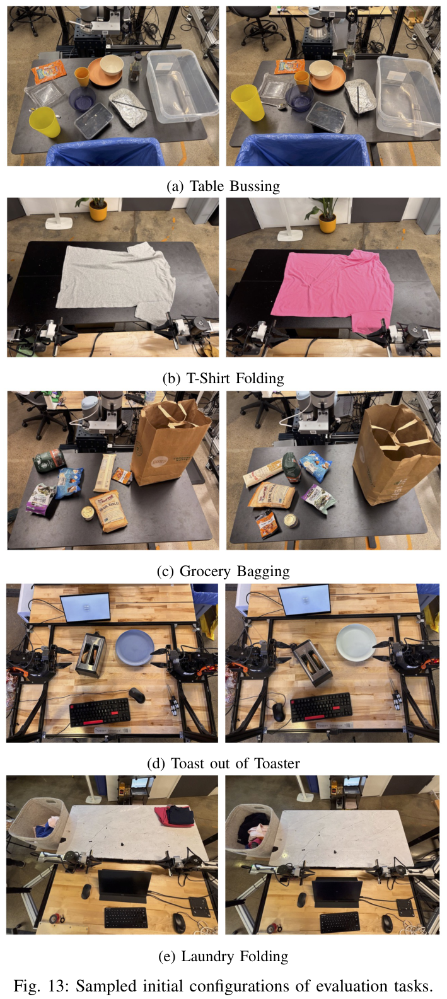
T-Shirt Folding. This task requires a bimanual ARX robot to fold a t-shirt. The training dataset has demonstrations of shirt folding with approximately 150 shirts, varying in size, color, and style. The evaluation scene, shown in Figure 13b, cycles through five seen shirts of varying colors and sizes, each starting from a flat configuration. The overall score is calculated as the percentage of shirts successfully folded, as determined by a human rater.
Grocery Bagging. This task requires a single UR5e robot arm to bag groceries. This task was evaluated out-of-the-box on models pretrained with the full mixture detailed in Black et al. [7]. The evaluation scene, shown in Figure 13c, contains seven items (with varying shapes, sizes, materials, and weights) and a large paper grocery bag. The overall score is calculated as the percentage of items placed into the grocery bag.
Toast out of Toaster. This task requires a bi-manual Trossen ViperX robot, mirroring the ALOHA [70] setup, to take two pieces of toast out of a toaster and place them onto a plate. This task was evaluated out-of-the-box on models pretrained with the full mixture detailed in Black et al. [7]. The evaluation scene is shown in Figure 13d and the overall score tracks task progress, with one point for removing each piece of toast and one point for placing it on the plate, for a score out of four.
Laundry Folding. This task requires a bi-manual ARX robot to take a piece of clothing, short or t-shirt, out of a laundry bin and fold it. It is a very challenging task, since successful folding of the tangled up laundry requires multiple steps of unfurling and flattening the laundry before folding can start. Following Black et al. [7], his task was evaluated with models pretrained on the full \(\pi_0\) training mixture detailed in Black et al. [7] and fine-tuned with a small amount of high-quality, task-specific data. The evaluation scene, shown in Figure 13e, contains five items of clothing randomly placed in a laundry hamper. The overall score is calculated as the percentage of clothing successfully folded and stacked, as determined by a human rater.
DROID. We train on all successful episodes from the DROID dataset (75k episodes, 21M samples) for 240k iterations (\(\approx\)3 episodes). We apply light data curation (see Appendix D). After training, we deploy the policy zero-shot in new scenes, with unseen scene background, camera angles, and objects. For quantitative evaluation, we design an evaluation suite with 16 tasks and 44 trials total per policy (see Table II). Each trial is scored with a task progress rubric (e.g., 1 point for picking up the correct object, 1 point for placing it in the correct receptacle). We show example scenes from the quantitative evaluation in Figure 14. We further run qualitative tests of the policy across various real-world setups on three different university campuses (see Figure 7). We do not measure success rates during these evaluations, but provide numerous qualitative videos of successes and failures to help readers get a sense of the policy’s capabilities.
| Task | Trials |
|---|---|
| Put the spoon in the dish rack | 4 |
| Put carrot in bowl | 4 |
| Put plate in dish rack | 2 |
| Wipe the table | 2 |
| Put the plate on the table | 2 |
| Clean up the table | 2 |
| Close the drawer | 4 |
| Put the stapler on the notebook | 2 |
| Put stapler in the drawer | 4 |
| Clean the whiteboard | 2 |
| Put the marker in the cup | 4 |
| Put the black sponge in the blue bowl | 2 |
| Put the red bottle in the black bowl | 2 |
| Put the watermelon in the purple bowl | 2 |
| Move the watermelon from the purple bowl to the blue bowl | 2 |
| Put the tape in the purple bowl | 2 |
| Put the water bottle on the left side of the table | 2 |
| Total | 44 |
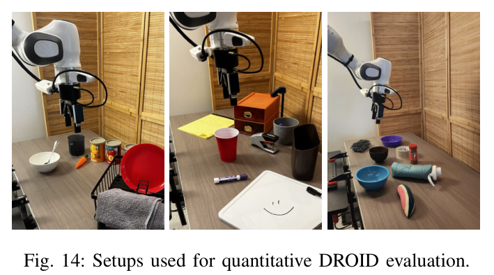
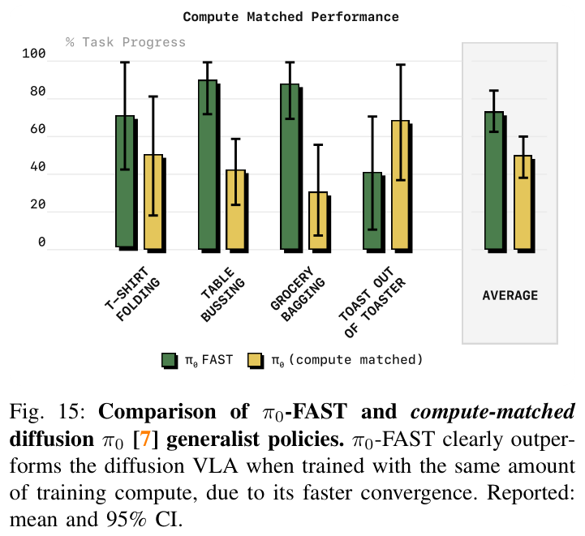
| Morphology | Dataset Name | Platform | Action Space | Action Dim | Control Frequency | Task |
|---|---|---|---|---|---|---|
| Single Arm | SOAR [74] | WidowX | EEF | 7 | 5 | Pick/place |
| DROID-Eval EEF [38] | Franka | EEF | 7 | 15 | Pick/place | |
| DROID-Eval Joint [38] | Franka | Joint | 8 | 15 | Pick/place | |
| SERL [46] | Franka | EEF | 7 | 10 | Insertion | |
| \(\pi\) Table Bussing [7] | UR5 | Joint | 8 | 20 | Pick/place | |
| Dexterous | NYU DexHand [30] | ALLEGRO | Joint+EEF | 30 | 16 | Dexterous manipulation |
| Berkeley DexHand [54] | ALLEGRO | Joint | 16 | 20 | In-hand manipulation | |
| Berkeley DexArm [58] | xArm+ALLEGRO | Joint | 23 | 20 | Dextrous pick/place | |
| HATO [42] | UR5+Psyonic Hand | EEF+Joint | 24 | 10 | Dextrous pick/place | |
| UMI | UMI [16] | UMI | EEF | 7 | 20 | Pick/place |
| UMI on Legs [31] | UMI | EEF | 7 | 20 | Whole-body manipulation | |
| Humanoid | HumanPlus [26] | Unitree H1 | Joint | 40 | 50 | Whole-body manipulation |
| UCSD TeleVision [14] | Unitree H1 w/Neck | Joint | 28 | 60 | Manipulation+active perception | |
| Navigation | Waymo [23] | Waymo Car | 2D delta | 2 | 10 | Autonomous Driving |